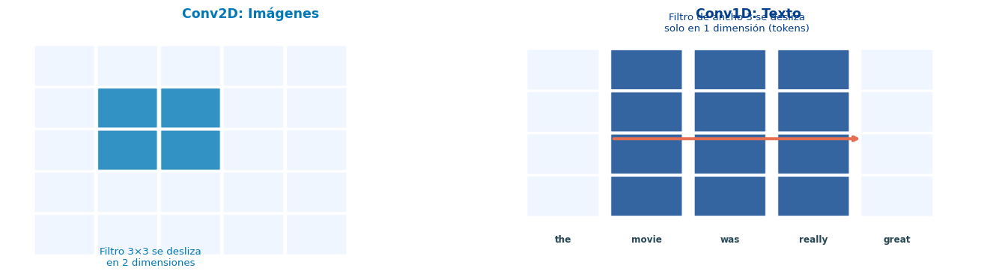
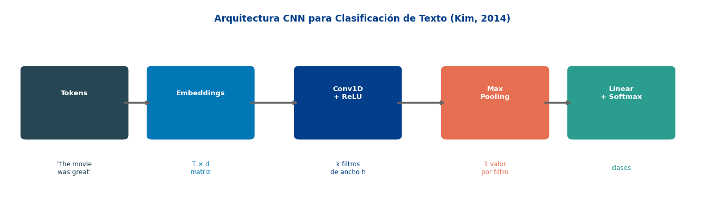
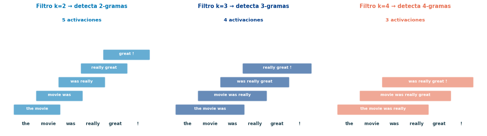
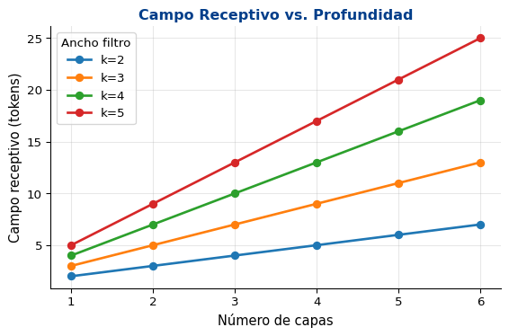

Para clasificación, a veces solo importan patrones locales
CNNs: una alternativa
Procesan toda la secuencia en paralelo
Capturan patrones locales (como n-gramas)
Muy eficientes en GPU
Desde 2014: resultados competitivos en clasificación de texto
Paper Fundacional
Kim (2014): Convolutional Neural Networks for Sentence Classification — un modelo simple con una sola capa convolucional logra resultados state-of-the-art.
De Imágenes a Texto

Diferencia clave
En imágenes, el filtro se mueve en 2D (alto × ancho). En texto, el filtro se mueve solo en 1D (a lo largo de los tokens), cubriendo todas las dimensiones del embedding.
Convolución 1D: La Operación
Definición Formal
Dada una secuencia de embeddings \(\mathbf{x}_1, \mathbf{x}_2, \ldots, \mathbf{x}_T \in \mathbb{R}^d\) y un filtro \(\mathbf{W} \in \mathbb{R}^{k \times d}\) de ancho \(k\):
Filtro A podría aprender a detectar “not good” (negación + adjetivo)
Filtro B podría detectar “very nice” (intensificador + positivo)
Filtro C podría detectar “the movie” (artículo + sustantivo)
Cada filtro es un detector de n-gramas aprendido
CNNs sobre Texto 🔤
El Pipeline Completo

1. Embedding Layer
Cada token → vector de \(d\) dimensiones
Oración de \(T\) tokens → matriz \(T \times d\)
Puede usar embeddings pre-entrenados (Word2Vec, GloVe)
2. Capa Convolucional
Múltiples filtros de diferentes anchos (\(k = 2, 3, 4, 5\))
Cada filtro detecta patrones de diferente tamaño
3. Max Pooling (global)
De cada mapa de activaciones → tomar el máximo
Resultado: un escalar por filtro
Captura “¿aparece este patrón en algún lugar?”
4. Clasificador
Concatenar todos los valores max-pooled
Capa Linear → softmax → probabilidades
Diferentes Anchos de Filtro

Multi-Size Filters
Usando filtros de diferentes anchos simultáneamente (\(k=2,3,4,5\)), el modelo puede capturar bigramas, trigramas, y patrones más largos al mismo tiempo.
Implementación en PyTorch
Code
class TextCNN(nn.Module):def__init__(self, vocab_size, embed_dim, n_filters, filter_sizes, n_classes, dropout=0.5, pad_idx=0):super().__init__()self.embedding = nn.Embedding(vocab_size, embed_dim, padding_idx=pad_idx)# Una capa Conv1d por cada tamaño de filtroself.convs = nn.ModuleList([ nn.Conv1d(embed_dim, n_filters, kernel_size=k)for k in filter_sizes ])self.dropout = nn.Dropout(dropout)self.fc = nn.Linear(n_filters *len(filter_sizes), n_classes)def forward(self, x):"""x: (batch, seq_len) — índices de tokens""" emb =self.embedding(x) # (batch, seq_len, embed_dim) emb = emb.permute(0, 2, 1) # (batch, embed_dim, seq_len)# Aplicar cada filtro + ReLU + max pooling global conv_outs = []for conv inself.convs: h = torch.relu(conv(emb)) # (batch, n_filters, seq_len - k + 1) h = h.max(dim=2).values # (batch, n_filters) ← max pooling conv_outs.append(h)# Concatenar todos los filtros cat = torch.cat(conv_outs, dim=1) # (batch, n_filters * len(filter_sizes)) cat =self.dropout(cat)returnself.fc(cat) # (batch, n_classes)# Ejemplomodel_cnn = TextCNN(vocab_size=5000, embed_dim=100, n_filters=64, filter_sizes=[2, 3, 4, 5], n_classes=2)x_demo = torch.randint(0, 5000, (8, 30)) # batch=8, longitud=30out = model_cnn(x_demo)print(f"Entrada: {x_demo.shape}") # (8, 30)print(f"Salida: {out.shape}") # (8, 2)print(f"\nParámetros por componente:")total =0for name, param in model_cnn.named_parameters(): total += param.numel()print(f" {name:30s}{str(list(param.shape)):20s} → {param.numel():>8,}")print(f" {'TOTAL':30s}{'':20s} → {total:>8,}")
import randomimport torch.optim as optimtorch.manual_seed(42)random.seed(42)np.random.seed(42)# --- Vocabulario y datos sintéticos ---positive_templates = ["the movie was great and entertaining","a wonderful film with amazing acting","really enjoyed this excellent movie","fantastic story beautifully told","brilliant performances all around","loved every moment of this film","an outstanding and memorable experience","the best movie I have seen","absolutely incredible and moving story","superb direction and great screenplay",]negative_templates = ["the movie was terrible and boring","a horrible film with bad acting","really hated this awful movie","worst story ever made honestly","dreadful performances all around sadly","wasted every moment watching this film","an embarrassing and forgettable disaster","the worst movie in recent years","absolutely terrible and painful experience","poor direction and weak screenplay overall",]# Construir vocabularioall_text =" ".join(positive_templates + negative_templates)words =sorted(set(all_text.split()))word2idx = {"<PAD>": 0, "<UNK>": 1}for w in words: word2idx[w] =len(word2idx)VOCAB_SIZE =len(word2idx)def encode_sentence(sent, max_len=12): tokens = [word2idx.get(w, 1) for w in sent.split()] tokens = tokens[:max_len] tokens += [0] * (max_len -len(tokens))return tokens# Generar datos con variacionesdef augment(templates, n_per_template=80): data = []for t in templates: words_t = t.split()for _ inrange(n_per_template):# Pequeñas variaciones: eliminar 0-1 palabras, permutar adyacentes w = words_t.copy()iflen(w) >3and random.random() <0.3: w.pop(random.randint(1, len(w)-2))iflen(w) >2and random.random() <0.3: i = random.randint(0, len(w)-2) w[i], w[i+1] = w[i+1], w[i] data.append(" ".join(w))return datapos_data = augment(positive_templates)neg_data = augment(negative_templates)X_all = torch.tensor([encode_sentence(s) for s in pos_data + neg_data])y_all = torch.cat([torch.ones(len(pos_data)), torch.zeros(len(neg_data))]).long()# Shuffle y splitperm = torch.randperm(len(X_all))X_all, y_all = X_all[perm], y_all[perm]split =int(0.8*len(X_all))X_train, y_train = X_all[:split], y_all[:split]X_test, y_test = X_all[split:], y_all[split:]print(f"Vocabulario: {VOCAB_SIZE} palabras")print(f"Entrenamiento: {len(X_train)} | Test: {len(X_test)}")print(f"Ejemplo positivo: '{pos_data[0]}'")print(f"Ejemplo negativo: '{neg_data[0]}'")
Vocabulario: 68 palabras
Entrenamiento: 1280 | Test: 320
Ejemplo positivo: 'the movie great was and entertaining'
Ejemplo negativo: 'the movie was terrible and boring'
Para clasificación de texto (sentimiento, temas), las CNNs suelen ser más rápidas de entrenar que RNNs con resultados comparables o mejores. Para tareas que requieren dependencias largas (traducción, generación), las RNNs con atención siguen siendo superiores.
Campo Receptivo
Una capa convolucional
Filtro de ancho \(k\) → ve \(k\) tokens consecutivos
Campo receptivo = \(k\) (limitado)
No captura dependencias más allá de \(k\) tokens
Múltiples capas (stacking)
2 capas con \(k=3\): campo receptivo = \(5\)
\(L\) capas con \(k\): campo receptivo = \(L(k-1) + 1\)
Crecimiento lineal del campo receptivo

Comparación con RNNs
Una RNN tiene campo receptivo infinito (en teoría) desde el primer paso, pero en la práctica sufre de vanishing gradients. Las CNNs tienen un campo receptivo finito pero controlable apilando capas.
Resumen
Lo Que Aprendimos Hoy
Conceptos
Las convoluciones 1D detectan patrones locales en texto
Un filtro de ancho \(k\) es un detector de \(k\)-gramas aprendido
Múltiples filtros de diferentes anchos capturan patrones variados
Max pooling global extrae la activación más fuerte